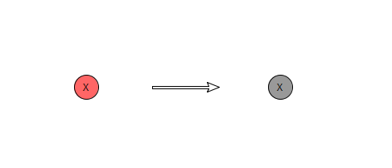
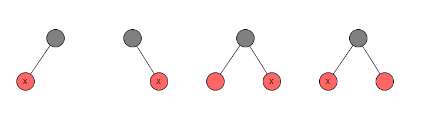
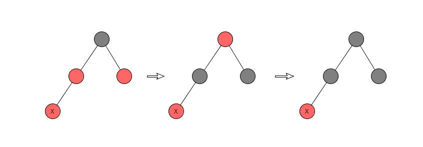
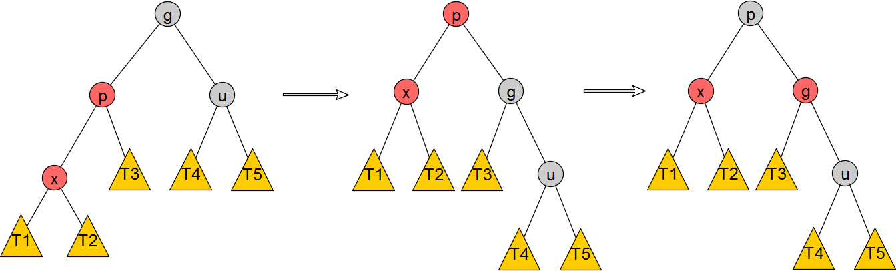
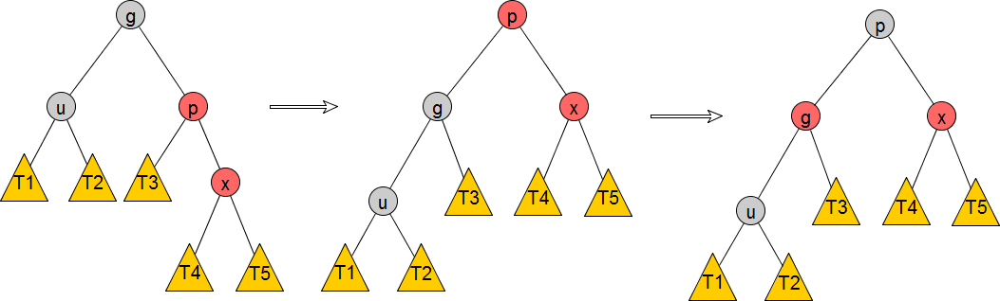
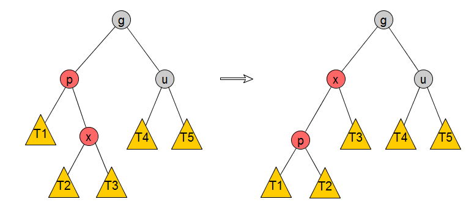
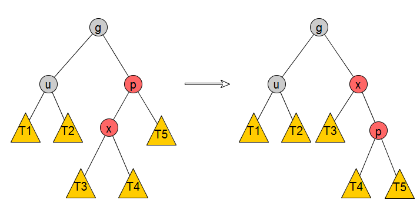

本文争取用精简的文字描述清楚红黑树的各种基本操作：插入、删除、查询。
在开始下文之前，再次祭出红黑树的四大性质：
根节点是黑色
叶子节点（NULL）视为黑色节点
如果一个节点是红色，那么它的2个孩子节点都是黑色
对于每条从根节点出发、并到达叶子节点的路径，路径上黑色节点的数量一致（叶子节点也计算在内）
Insert
插入操作的第一个准则是，插入的节点先设置为红色，插入后根据插入的节点在树中的位置以及树的着色状态，可以划分出多种情况，这些情况总结如下：
（注意，在以下所有情况中，在节点插入前红黑树是平衡的，即使从图片上看并不能看出平衡性）
1.插入的节点是根节点

显然无需调整红黑树。
2.插入的节点的父节点是黑色

插入红节点，并不影响性质4。无需调整红黑树。
3.插入的节点的父节点是红色
- 3a.叔节点（即父节点的兄弟节点）也是红色
这种情况下，需要把父、叔节点变为黑色，并把祖父节点变为红色，这样就保证了当前局部范围内红黑树性质能够被满足，但因为祖父节点被改变了颜色，所以事情还没完，需要递归本步骤（即把祖父节点当做是插入的节点），直到到达根节点。
这个步骤被称为Recoloring。

- 3b.叔节点是黑色
当处于这个情况下，根据父节点相对祖父节点的位置（Left or Right）和 插入节点相对父节点的位置（Left or Right），总共有四种细分状态：
i) Left-Left

步骤：
1）右旋转g
2）交换g和p的颜色
ii) Right-Right

步骤：
1）左旋转g
2）交换g和p的颜色
可以注意到，整个步骤和Left-Left非常相似，其实就是Left-Left的水平镜像。
iii) Left-Right

可以用一个旋转操作把这个case转换成Left-Left的case，步骤如下：
1）左旋转p
iiii) Right-Left

可以用一个旋转操作把这个case转换成Right-Right的case，步骤如下：
1）右旋转p
资料
本文配图使用yEd编辑：http://www.yworks.com/products/yed/download
http://www.geeksforgeeks.org/red-black-tree-set-2-insert/
红黑树测试程序：https://www.cs.usfca.edu/~galles/visualization/RedBlack.html
博主将十分感谢对本文章的任意金额的打赏^_^